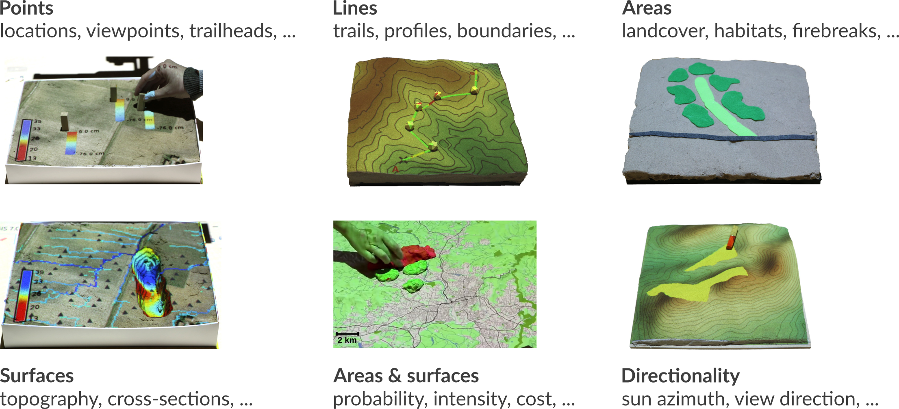

Paper maps provide limited data with limited interaction, but encourage face-to-face discussion
Digital maps limit f2f collaboration - only one user at a time can navigate and modify models.
Interaction through mouse, keyboard and display does not encourage creativity.
Motivation
Manipulating 3D computer models is not intuitive and requires specialized software and training.
3D physical models provide intuitive representation of landscapes but interaction is limited
Evolution of tangible interfaces
MIT Media Lab: URP (1999), Illuminating Clay (2004)
3D scanning with $40,000 laser scanner. Image source:
MIT Media Lab Ishii H., Ratti C., Piper B., Wang Y., Biderman A. and Ben-Joseph E.
"Bringing clay and sand into digital design—continuous tangible user interfaces." BT technology journal 22.4 (2004): 287-299.
Underkoffler, J. Ishii, H. "Urp: a luminous-tangible workbench for urban planning and design", 1999,
CHI '99 Proc. SIGCHI conference on Human Factors in Computing Systems, p. 386-393.
iterative process - if we want predefined scale and pre-defined (approximate) size
what size of feature change can be detected given the resolution of the scanner (1-2mm)?
Scale of the physical model
If the smallest feature that can be reliably detected is $1 cm$ cube
What scale the model should be to facilitate modeling dams and rivers 10m wide?
What would be the geospatial extent of the region represented by the model size of 50 x 60 cm? how about 1 m x 80 cm ?
If the difference in elevation in your area is 30m and you want 3 x exaggeration
how high your model will be at the scale computed above for the 50 x 60 cm model?
Scanning the physical model
3D sensors based on similar principles as surveying
time of flight, near infrared laser
stereo(photogrammetry) - overlapping images from NIR image and laser
distortions, outliers (flying pixels), noise need to be adressed
Scanning calibration
calibration process: scanning flat surface
tilt and radial distortion
computing tilt angle and applying the correction to scanned point cloud
Processing the point cloud
Scanned 3D model includes all features in the scan area
Images produced by Kinect Fusion Explorer: was the tilt filtered out here?
Processing the point cloud
point cloud is acquired within the operator-defined horizontal and vertical extent
Transformation from the scan ("table") coordinates to the georeferenced coordinate system
Rescaling, rotation and translation
$$ G = S . R + T$$
$S=[S_x,S_y,S_z]$ scales to real-world dimensions,
$R$ is a rotation matrix that rotates the points around the $z$ axes by angle $\alpha$
$T=[t_x,t_y,t_z]$ translates the points so that the lower left corner of the model
matches the south-west corner of the DEM and the lowest DEM elevation
matches the lowest point of the model.
Gridding
Converting the filtered, corrected and georeferenced $(x,y,z)$ point cloud to raster
binning: per-cell mean, nearest point
binning: fast, but the surface is rough, with holes
interpolation: slower, but the surface is smooth and continuous
Tangible interactions
3D scanner acquires both depth and color (RGB) information that can be used to design interactions

Tangible interactions: surface change
new surface is continuously computed
map algebra is used to detect the change if needed
TUI: markers
new surface is continuously computed
map algebra is used to detect the change
markers are identified and converted to vector point data
vector point data can be connected into lines using TSP method
TUI: color patches
color (RGB) data are acquired
image segmentation and classification is used to detect
the patches and assign ther attribute
raster patches can be converted to vector polygons
TUI: color clay
both depth and color (RGB) data are used
image segmentation and classification is used to detect
the patches and assign ther attribute
map algebra is used to quantify the height of the clay blob
and assign related attribute
Simulations with TL
Coupling with process models to evaluate impact of scenarios
Scenarios: natural events, human modification of landscape
Visibility analysis
Visibility and line of sight
Solar radiation analysis
Solar irradiation and cast shadows
Trail planning
Optimized trail routing between waypoints based on energetics, topography, and cost maps with feedback including trail slopes and viewsheds
3D soil moisture exploration
Dam breach
Applications: wildfire spread
Management of infectious disease
Sudden Oak Death (SOD)
simulating disease using spatially-explicit model
workshop with expert stakeholders
Urban growth
Simulation of urban growth scenarios with FUTURES model